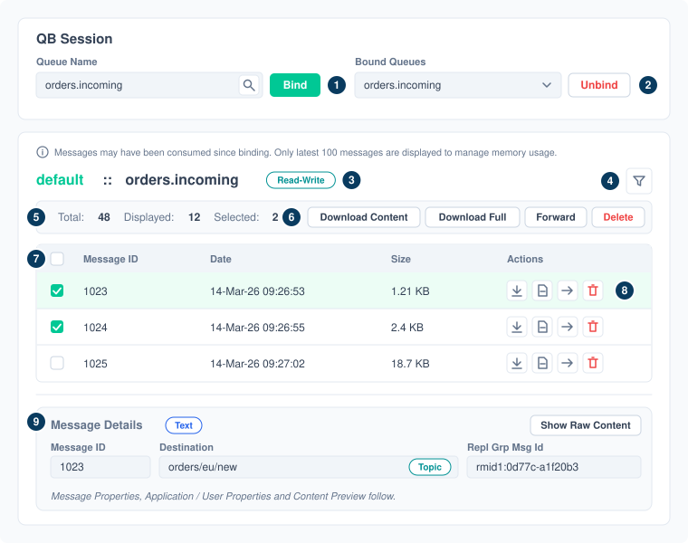
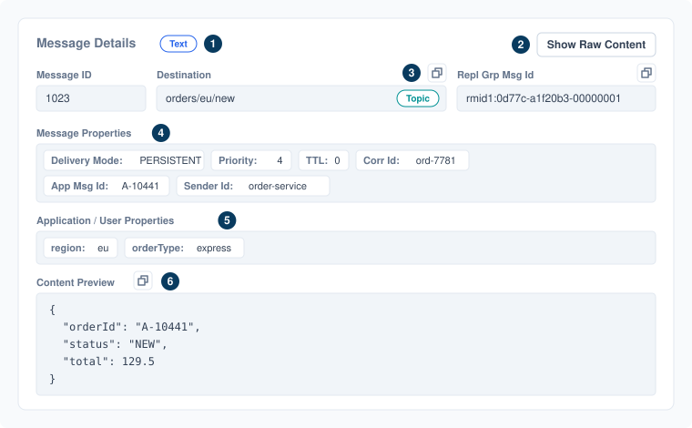
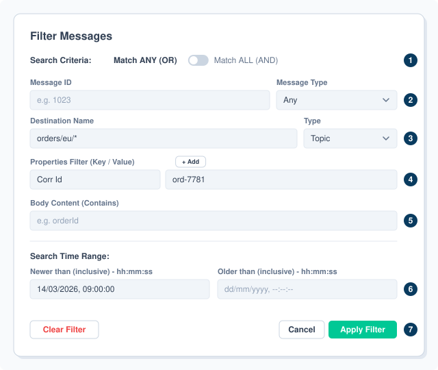
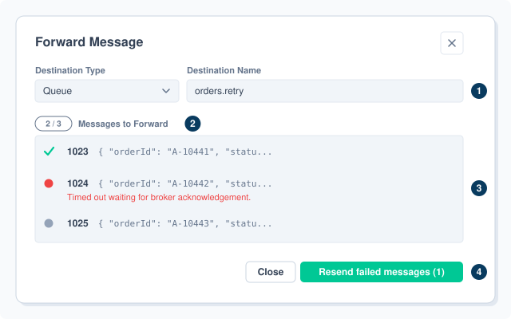

Look at the messages waiting on a queue without taking them off it. Read each one, narrow the list with a filter, and forward, delete or download the messages you need.
Queue Browser needs the client connection from the Connections page. Until you connect, the page shows Connection Required in place of everything below.

Queue "<name>" bound. The queue appears in Bound Queues, and its messages start to arrive in the table.You can bind up to 3 queues at once. Switch between them in Bound Queues; each queue keeps its own messages. To stop receiving messages from a queue, select it and press Unbind. Unbind also discards the messages the page had read from that queue; bind it again to read them afresh.
The broker can end a binding for good: the queue is deleted or its egress is disabled, your permissions change, or an administrator unbinds the client. A message then says Queue "<name>" was disconnected: <reason>. Bind it again to continue. The queue leaves Bound Queues and frees its place. If it was on show, the page moves to the next bound queue. Bind it again once the cause is fixed.
| Column | What it holds |
|---|---|
| Tick box | Ticks the message for the bulk buttons. The box in the header ticks or clears every message on show. |
| Message ID | The Guaranteed Message ID the broker gave the message. |
| Date | The sender's timestamp, or (No Timestamp) when the sender set none. |
| Size | The size of the message. |
| Actions | The row buttons: Download Content, Download Full, Forward and Delete. |
The bar above the table counts the messages: Total is every message the page holds for the queue, Displayed is how many of them pass the filter, and Selected is how many you have ticked.
Click a row to see that message in the Message Details panel under the table.

| The payload is | You see |
|---|---|
| Text, XML, or a binary attachment that holds UTF-8 text | The text. |
| A map or a stream | Its fields as YAML: strings, numbers, true and false, null, nested maps and lists, bytes as !!binary followed by base64, and a destination as { topic: name } or { queue: name }. The copy button copies that YAML. |
| Binary that is not text | What its first bytes say it is, and its size, for example [Binary payload, looks like PNG image: 1,234 bytes]. Other kinds include gzip-compressed data, a PDF document and an executable. When the bytes match no known kind you see only the size: [Binary payload: 1,234 bytes]. The copy button stays off. |
| A PNG, JPEG, GIF or WebP image | The same line as any binary payload, and a Show content button beside the copy button. It puts the image in place of the box; Hide content puts the box back. |
Nothing is decoded until you press Show content. An image whose header declares more than 40 megapixels, or no size at all, has no button, and a line under the box says why. The header can declare a size its bytes do not hold, so even a small file can be refused.
Press the filter button (4 in Figure 1) to open Filter Messages. A filter changes only what the table shows. Every message stays in memory, and Clear Filter brings them all back.

Message ID, Destination Name and a property's value are compared whole, in any letter case: orders/eu/new finds only that destination. Put * wherever any run of characters may stand, spaces and symbols included:
| You type | It finds |
|---|---|
orders/eu/* | Every destination that starts with orders/eu/. |
*/cancelled | Every destination that ends with /cancelled. |
*eu* | Every destination with eu anywhere in it. |
Body Content needs no wildcard: it always looks for your text anywhere in the payload.
Forwarding sends a copy of one or more messages to another destination. The original stays on its queue.

A message fails when the broker rejects it, when the client disconnects during the send, or when the broker does not acknowledge it within 30 seconds (Timed out waiting for broker acknowledgement.).
Resend failed messages sends only the failed ones again. A message with a green tick is never sent twice. You may change the destination before you resend, so a retry can go somewhere else.
You can delete only on a queue whose badge reads Read-Write. It reads so when the queue's permission for other clients is Consume, Modify-Topic or Delete, or when you own the queue. When the broker lets your client do no more than read, the badge reads Read-Only and the rows have no delete button.
Delete message <id>?Delete in the dialog sends the removal. Cancel, Esc or a click outside sends nothing.
A message then reports Removal requested for N message(s). and those rows leave the table. The broker does not confirm a removal: a message it did not remove shows up again the next time you bind the queue. If a removal could not be requested, the message is red and adds M could not be requested: <reason>; those rows stay in the table.
Each download comes as a row button, for one message, and as a button above the table, for every message you ticked.
| Button | What you get |
|---|---|
| Download Content | The payload only, byte for byte, in a file named solace-message-{id}.{ext}. |
| Download Full | The whole message as JSON, with its properties, destination, timestamp and payload, in solace-message-{id}-full.json inside a ZIP archive. |
The file holds exactly the bytes of the payload: a binary attachment as it is, a text or XML message as UTF-8 text, and a map or stream as its raw wire bytes. Those wire bytes are in Solace's own encoding, which only a Solace API reads back; for a readable copy of a map or stream, use Download Full.
The extension follows the payload:
.png, .jpg, .gz, .zip, .pdf, .mp4 and so on), or .bin when the kind is not recognised. An executable also gets .bin, never .exe..json, .xml, .csv, .yaml or .txt: from the publisher's HTTP Content-Type when it names one of those, otherwise from what the text looks like. HTML and SVG are saved as .txt..bin.In Chrome and Edge the row button opens the browser's save dialog on that name, where you can change the name or the folder; Cancel saves nothing. Firefox and Safari save the file straight to your downloads. The button above the table puts each message into one ZIP archive under the same names.
Each message becomes one JSON file of this shape:
{
"messageProperties": { ... standard Solace properties + destination + messageType ... },
"applicationProperties": { ... user/custom properties ... },
"payload": "..."
}A text payload is carried as text. A binary payload that is not text is carried as base64, with "payloadEncoding": "base64" beside "payload". A map or stream is carried the same way, as its raw wire bytes, with "payloadDecoded" beside them: its fields as plain JSON (a map as an object, a stream as an array, bytes as { "base64": ... }, a destination as { "topic": ... }, and a 64-bit integer too large for JSON's numbers as text).
An administrator may give you a build of the app that never shows what a message holds. In that build the message table, the properties, Forward and Delete work as this chapter says, and these parts are absent: Content Preview, Show Raw Content, the two download buttons and the Body Content rule of the filter.
| Key | Where | What it does |
|---|---|---|
| Enter | Queue Name | Binds to the queue. |
| Enter | Destination Name in Forward Message | Sends. |
| Esc | Any dialog | Closes it. |